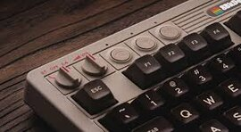
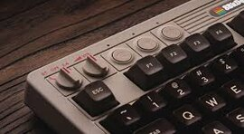

Teclados mecanicos retro que nos recuerdan a la NES.
Hace unos años nadie prestaba atención a los teclados. Después de todo,
"solo" servían para teclear. Sin embargo los fabricantes de periféricos
pronto se dieron cuenta de que estos periféricos se habían convertido en
un objeto de deseo para gamers y usuarios convencionales. Eso es justo
lo que ha aprovechado 8BitDo, el fabricante que lleva tiempo
aprovechando muy bien una tendencia muy arraigada entre los amantes de
la tecnología.
Mecánico + retro = éxito. Los nuevos teclados mecánicos de este
fabricante no solo presumen de interruptores Kailh Box White V2
intercambiables, sino que además cuentan con dos diseños retro
absolutamente encantadores que son un rendido homenaje tanto a la
Nintendo Entertainment System (NES) que se vendió en el mundo
occidental, como a la Nintendo Famicom que se vendió en Japón.

Mucha autonomía, cero retroiluminación.
Si lo usamos de forma inalámbrica, la batería recargable tiene una
autonomía de 200 horas —unas cinco semanas si lo usamos ocho horas al
día durante cinco días a la semana— y su carga se completa en unas
cuatro horas. Una de las ausencias más llamativas es la de la
retroiluminación, que no está presente en el teclado. Tampoco disponemos
en este modelo de algún tipo de retroiluminación RGB.
Y con superbotones.
Estos modelos llegan además acompañados de un detalle especialmente
espectacular: un par de botones gigantes que también se inspiran en los
mandos de las NES y que, cómo no, son programables. Hacen uso de
interruptores Gateron Green que teóricamente son perfectos para usarlos
de forma... contundente, y se conectan al teclado mediante un cable de
3,5 mm. Por si dos botones os parecen pocos, hay conectores adicionales
en el teclado para conectar hasta cuatro pares en total. Cada par cuesta
19,99 dólares.
 
